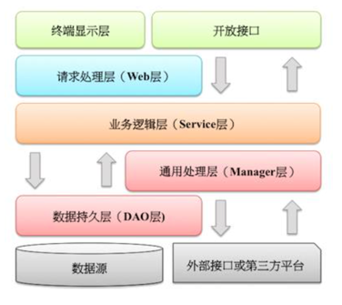

代码规范
代码规范¶
前言¶
下文是对里面常用的一些案例及规范的抽取。
无规矩不成方圆，无规范不能协作¶
对软件来说，适当的规范和标准绝不是消灭代码内容的创造性、优雅性，而是限制过度个性化，以一种普遍认可的方式一起做事，降低故障率，提升协作效率。
开发手册详细列举如何开发更加高效，更加容错，更加有协作性，力求知其然，更知其不然，结合正反例，提高代码质量。比如，异常日志处理时的各种不规范行为；集合转换的各种坑；创建线程池出现的等待队列 OOM 等。
简单，适用的代码规约背后所传递的是技术上的追求卓越、协同合作的精神，是每个技术团队不可缺失的重要利器。 代码是软件工程里面的产品设计、系统架构设计等工作的最后承载体，代码的质量决定了一切工作的成败。
一、编程规约¶
1、所有编程相关命名均不能以下划线或美元符号开始,也不能以下划线或美元符号结束。
2、所有编程相关的命名严禁使用拼音与英文混合的方式,更不允许直接使用中文的方式。
3、类名使用 UpperCamelCase 风格,必须遵从**驼峰形式**,但以下情形例外:(领域模型的相关命名)DO / DTO / VO / DAO 等。
正例:MarcoPolo / UserDO / XmlService / TcpUdpDeal / TaPromotion
反例:macroPolo / UserDo / XMLService / TCPUDPDeal / TAPromotion
4、方法名、参数名、成员变量、局部变量都统一使用 lowerCamelCase 风格,必须遵从 驼峰形式。
5、常量命名全部大写,单词间用下划线隔开,力求语义表达完整清楚,不要嫌名字长。
6、抽象类命名使用 Abstract 或 Base 开头；异常类命名使用 Exception 结尾；测试类命名以它要测试的类的名称开始，以 Test 结尾
7、中括号是数组类型的一部分,数组定义如下:String[] args;
8、POJO 类中的任何布尔类型的变量,都不要加 is,否则部分框架解析会引起序列化错误。
反例：定义为基本数据类型 boolean isSuccess;的属性,它的方法也是 isSuccess(),RPC 框架在反向解析的时候,“以为”对应的属性名称是 success，导致属性获取不到，进而抛出异常。
9、包名统一使用小写，点分隔符之间有且仅有一个自然语义的英语单词。包名统一使用 单数形式,但是类名如果有复数含义,类名可以使用复数形式。
10、如果使用到了设计模式，建议在类名中体现出具体模式。
说明：将设计模式体现在名字中， 有利于阅读者快速理解架构设计思想。
11、对于 Service 和 DAO 类，基于 SOA 的理念，暴露出来的服务一定是接口，内部 的实现类用 Impl 的后缀与接口区别。
12、枚举类名建议带上 Enum 后缀,枚举成员名称需要全大写,单词间用下划线隔开。
说明:枚举其实就是特殊的常量类,且构造方法被默认强制是私有。
13、各层命名规约
Service/DAO 层方法命名规约:
1) 获取单个对象的方法用 get 做前缀。
2) 获取多个对象的方法用 list 做前缀。
3) 获取统计值的方法用 count 做前缀。
4) 插入的方法用 insert 做前缀。
5) 删除的方法用 delete 做前缀。
6) 修改的方法用 update 做前缀。
领域模型命名规约:
1) 数据对象:xxxDO,xxx 即为数据表名。
2) 数据传输对象:xxxDTO,xxx 为业务领域相关的名称。
3) 展示对象:xxxVO,xxx 一般为网页名称。
4) POJO 是 DO/DTO/BO/VO 的统称,禁止命名成 xxxPOJO。
14、long 或者 Long 初始赋值时,必须使用大写的 L，不能是小写的 l，小写容易跟数字 1 混淆，造成误解。
说明:Long a = 2l; 写的是数字的 21,还是 Long 型的 2?
15、不要使用一个常量类维护所有常量，应该按常量功能进行归类，分开维护。
如：缓存相关的常量放在类:CacheConsts 下；系统配置相关的常量放在类:ConfigConsts 下。
16、对外暴露的接口签名，原则上不允许修改方法签名，避免对接口调用方产生影响。
接口过时必须加@Deprecated 注解，并清晰地说明采用的新接口或者新服务是什么
17、当一个类有多个构造器方法，或者多个同名方法（重载），这些方法应该按顺序放置在一起，便于阅读。
18、推荐尽量少用 else。if-else 的方式可以改写成:
说明：如果使用要 if-else if-else 方式表达逻辑，最好不要超过 3 层
19、所有的类都必须添加作者信息。方法前要加注释。
代码修改的同时，注释也要进行相应的修改，尤其是参数、返回值、异常、核心逻辑 等的修改。
20、接口返回值不允许使用枚举类型或者包含枚举类型的 POJO 对象（建议用字符串代替）。容易引发反序列化失败。
21、依赖于一个二方库群时，必须定义一个统一版本变量，避免版本号不一致。
说明:依赖 springframework-core、-context、-beans，它们都是同一个版本，可以定义一个变量来保存版本:${spring.version}，定义依赖的时候，引用该版本。
二、编码误区¶
1、Object 的 equals 方法容易抛空指针异常，应使用常量或确定有值的对象来调用 equals。
正例: "test".equals(object);
反例: object.equals("test");
说明:推荐使用 java.util.Objects#equals (JDK7 引入的工具类)
2、所有的相同类型的包装类对象之间值的比较,全部使用 equals 方法比较。
3、序列化类新增属性时,请不要修改 serialVersionUID 字段,避免反序列失败;如果完全不兼容升级,避免反序列化混乱,那么请修改 serialVersionUID 值。
4、使用索引访问用 String 的 split 方法得到的数组时,需做最后一个分隔符后有无内 容的检查,否则会有抛 IndexOutOfBoundsException 的风险。
String str = "a,b,c,,";
String[] ary = str.split(",");
//预期大于 3,结果是 3
System.out.println(ary.length);
5、字符串的联接方式，使用 StringBuilder 的 append 方法进行扩展。
反例:
String str = "start";
for(int i=0; i<100; i++){
str = str + "hello";
}
说明:反编译出的字节码文件显示每次循环都会 new 出一个 StringBuilder 对象,然后进行 append 操作,最后通过 toString 方法返回 String 对象,造成内存资源浪费。
6、final 可提高程序响应效率，声明成 final 的情况：
7、Map/Set 的 key 为自定义对象时，必须重写 hashCode 和 equals。
8、使用集合转数组的方法，必须使用集合的 toArray(T[] array)，传入的是类型完全一样的数组，大小就是 list.size()
反例:
直接使用 toArray 无参方法存在问题,此方法返回值只能是 Object[]类,若强转其它类型数组将出现 ClassCastException 错误。
正例:
List<String> list = new ArrayList<String>(2);
list.add("guan");
list.add("bao");
String[] array = new String[list.size()];
array = list.toArray(array);
注：ArrayList 源码：
public <T> T[] toArray(T[] a) {
if (a.length < size)
// Make a new array of a's runtime type, but my contents:
return (T[]) Arrays.copyOf(elementData, size, a.getClass());
System.arraycopy(elementData, 0, a, 0, size);
if (a.length > size)
a[size] = null;
return a;
}
9、使用工具类 Arrays.asList()把数组转换成集合时，不能使用其修改集合相关的方法, 它的 add/remove/clear 方法会抛出 UnsupportedOperationException 异常。
说明：asList 的返回对象是一个 Arrays 内部类,并没有实现集合的修改方法。Arrays.asList 体现的是适配器模式,只是转换接口,后台的数据仍是数组。
String[] str = new String[] { "a", "b" };
List list = Arrays.asList(str);
第一种情况:list.add("c"); 运行时异常。
第二种情况:str[0]= "gujin"; 那么 list.get(0)也会随之修改。
10、不要在 foreach 循环里进行元素的 remove/add 操作。remove 元素请使用 Iterator 方式,如果并发操作,需要对 Iterator 对象加锁。
反例:
List<String> a = new ArrayList<String>();
a.add("1");
a.add("2");
for (String temp : a) {
if("1".equals(temp)){
a.remove(temp);
}
}
正例:
Iterator<String> it = a.iterator();
while(it.hasNext()){
String temp = it.next();
if(删除元素的条件){
it.remove();
}
}
11、集合初始化时，尽量指定集合初始值大小。
说明：ArrayList 尽量使用 ArrayList(int initialCapacity) 初始化
12、使用 entrySet 遍历 Map 类集合 KV,而不是 keySet 方式进行遍历。
说明：keySet 其实是遍历了 2 次,一次是转为 Iterator 对象,另一次是从 hashMap 中取出 key 所对应的 value。而 entrySet 只是遍历了一次就把 key 和 value 都放到了 entry 中，效率更高。如果是 JDK8,使用 Map.foreach 方法。
13、Map 类集合 K/V 能不能存储 null 值的情况
| 集合类 | Key | Value | Super | 说明 |
|---|---|---|---|---|
| Hashtable | 不允许为 null | 不允许为 null | Dictionary | 线程安全 |
| ConcurrentHashMap | 不允许为 null | 不允许为 null | AbstractMap | 线程局部安全 |
| TreeMap | 不允许为 null | 允许为 null | AbstractMap | 线程不安全 |
| HashMap | 允许为 null | 允许为 null | AbstractMap | 线程不安全 |
14、利用 Set 元素唯一的特性,可以快速对另一个集合进行去重操作,避免使用 List 的 contains 方法进行遍历去重操作。
15、获取单例对象要线程安全(双重空判断)。在单例对象里面做操作也要保证线程安全。
16、线程资源必须通过线程池提供，不允许在应用中自行显式创建线程。
17、多线程并行处理定时任务时，Timer 运行多个 TimeTask 时，只要其中之一没有捕获抛出的异常，其它任务便会自动终止运行，使用 ScheduledExecutorService 则没有这个问题。
@param
command the task to execute
delay the time from now to delay execution
unit the time unit of the delay parameter
@method
ScheduledFuture<?> java.util.concurrent.ScheduledExecutorService.schedule(Runnable command, long delay, TimeUnit unit)
18、线程池不允许使用 Executors 去创建,而是通过 ThreadPoolExecutor 的方式,这样的处理方式让写的同学更加明确线程池的运行规则,规避资源耗尽的风险。
说明:Executors 各个方法的弊端:
newFixedThreadPool 、newSingleThreadExecutor 和 newScheduledThreadPool:
主要问题是堆积的请求处理队列可能会耗费非常大的内存,甚至 OOM。
19、创建线程或线程池时请指定有意义的线程名称，方便出错时回溯。
正例:
public class TimerTaskThread extends Thread {
public TimerTaskThread(){
super.setName("TimerTaskThread");
...
}
}
20、避免 Random 实例被多线程使用,虽然共享该实例是线程安全的,但会因竞争同一 seed 导致的性能下降。
说明:Random 实例包括 java.util.Random 的实例或者 Math.random()实例。
正例:在 JDK7 之后,可以直接使用 API ThreadLocalRandom,在 JDK7 之前,可以做到每个线程一个实例。
21、volatile 解决多线程内存不可见问题。对于一写多读,是可以解决变量同步问题, 但是如果多写,同样无法解决线程安全问题。
如果想取回 count++数据,使用如下类实现:
AtomicInteger count = new AtomicInteger();
count.addAndGet(1);
count++操作如果是JDK8,推荐使用 LongAdder 对象,比 AtomicLong 性能更好(减少乐观锁的重试次数)。
22、在一个 switch 块内,每个 case 要么通过 break/return 来终止,要么注释说明程序 将继续执行到哪一个 case 为止;在一个 switch 块内,都必须包含一个 default 语句并且放在 最后,即使它什么代码也没有。
23、在使用正则表达式时,利用好其预编译功能,可以有效加快正则匹配速度。
说明:不要在方法体内定义:Pattern pattern = Pattern.compile(规则);
24、获取当前毫秒数:System.currentTimeMillis(); 而不是 new Date().getTime();
如果想获取更加精确的纳秒级时间值，用 System.nanoTime。
25、日志输出最好使用占位符的方式
26、避免重复打印日志,浪费磁盘空间,务必在 log4j.xml 中设置 additivity=false。
27、输出的 POJO 类必须重写 toString 方法，否则只输出此对象的 hashCode 值(地址值)，没啥 参考意义。
三、MYSQL 规约¶
1、任何字段如果为非负数，必须是 unsigned。
2、表名、字段名必须使用小写字母或数字
3、禁用保留字,如 desc、range、match、delayed 等,参考官方保留字。
4、唯一索引名为 uk_字段名；普通索引名则为 idx_字段名
5、如果存储的字符串长度几乎相等，使用 CHAR 定长字符串类型。
varchar 是可变长字符串，不预先分配存储空间,长度不要超过 5000，如果存储长度大于此值，定义字段类型为 TEXT，独立出来一张表，用主键来对应，避免影响其它字段索引效率。
6、表必备三字段：id, gmt_create, gmt_modified
说明:其中 id 必为主键,类型为 unsigned bigint、单表时自增、步长为 1;分表时改为从 TDDL Sequence 取值,确保分表之间的全局唯一。
gmt_create, gmt_modified 的类型均为 date_time 类型。
`id` int(10) unsigned NOT NULL AUTO_INCREMENT COMMENT '自增主键',
`created_time` timestamp(3) NOT NULL DEFAULT CURRENT_TIMESTAMP(3) COMMENT '创建时间',
`updated_time` timestamp(3) NOT NULL DEFAULT CURRENT_TIMESTAMP(3) ON UPDATE CURRENT_TIMESTAMP(3) COMMENT '更新时间',
PRIMARY KEY (`id`),
7、如果修改字段含义或对字段表示的状态追加时,需要及时更新字段注释。
8、单表行数超过 500 万行或者单表容量超过 2GB，才推荐进行分库分表。
说明:如果预计三年后的数据量根本达不到这个级别,请不要在创建表时就分库分表。
反例:某业务三年总数据量才 2 万行,却分成 1024 张表。
问:你为什么这么设计?答:分 1024 张表,不是标配吗?
9、合适的字符存储长度，不但节约数据库表空间、节约索引存储，更重要的是提升检索速度。
正例:
人的年龄用 unsigned tinyint(表示范围 0-255,人的寿命不会超过 255 岁);
海龟就 必须是 smallint,
太阳的年龄,就必须是 int;
所有恒星的年龄都加起来，那么就必须使用 bigint。
10、业务上具有唯一特性的字段，即使是组合字段，也必须建成唯一索引
11、严禁多个表间 join 操作
12、页面搜索严禁左模糊或者全模糊，如果需要请走搜索引擎来解决。
13、如果有 order by 的场景，请注意利用索引的有序性。order by 最后的字段是组合索引的一部分，并且放在索引组合顺序的最后，避免出现 file_sort 的情况，影响查询性能。
正例:
where a=? and b=? order by c; 索引:a_b_c
反例:
索引中有范围查找,那么索引有序性无法利用,如:WHERE a>10 ORDER BY b; 索引 a_b 无法排序。
14、建组合索引的时候，区分度最高的在最左边
正例:
如果 where a=? and b=? ,a 列的几乎接近于唯一值,那么只需要单建 idx_a 索引即可。
说明:存在非等号和等号混合判断条件时,在建索引时,请把等号条件的列前置。如:where a>?
and b=? 那么即使 a 的区分度更高,也必须把 b 放在索引的最前列。
15、创建索引时避免有如下极端误解：
16、不得使用外键与级联，一切外键概念必须在应用层解决。
说明:(概念解释)学生表中的 student_id 是主键,那么成绩表中的 student_id 则为外键。 如果更新学生表中的 student_id,同时触发成绩表中的 student_id 更新,则为级联更新。外键与级联更新适用于单机低并发,不适合分布式、高并发集群;级联更新是强阻塞,存在数据库更新风暴的风险;外键影响数据库的插入速度。
17、IDB 数据订正时，删除和修改记录时，要先 select，避免出现误删除，确认无误才能提交执行。
18、in 操作能避免则避免，若实在避免不了，需要仔细评估 in 后边的集合元素数量，控制在 1000 个之内
19、所有的字符存储与表示，均以 utf-8 编码，那么字符计数方法注意:
说明:
SELECT LENGTH("阿里巴巴"); 返回为 12
SELECT CHARACTER_LENGTH("阿里巴巴"); 返回为 4
如果要使用表情，那么使用 utfmb4 来进行存储，注意它与 utf-8 编码。
20、在表查询中，一律不要使用 * 作为查询的字段列表，需要哪些字段必须明确写明。
21、不要用 resultClass 当返回参数,即使所有类属性名与数据库字段一一对应,也需要定义;反过来,每一个表也必然有一个与之对应。
说明：配置映射关系，使字段与 DO 类解耦，方便维护
22、xml 配置中参数注意使用:#{},#param# 不要使用${} 此种方式容易出现 SQL 注入
23、更新数据表记录时，必须同时更新记录对应的 gmt_modified 字段值为当前时间。
24、不要写一个大而全的数据更新接口,传入为 POJO 类，不管是不是自己的目标更新字段，都进行 update table set c1=value1,c2=value2,c3=value3; 这是不对的。
执行 SQL 时，尽量不要更新无改动的字段，一是易出错；二是效率低；三是 binlog 增加存储。
四、工程规约¶
1、默认上层依赖于下层，箭头关系表示可直接依赖，如:开放接口层可以依赖于 Web 层,也可以直接依赖于 Service 层,依此类推:

- 开放接口层：可直接封装 Service 接口暴露成 RPC 接口；通过 Web 封装成 http 接口；网关控制层等。
- 终端显示层：各个端的模板渲染并执行显示层。当前主要是 velocity 渲染,JS 渲染,JSP 渲 染,移动端展示层等。
- Web 层：主要是对访问控制进行转发,各类基本参数校验,或者不复用的业务简单处理等。
- Service 层：相对具体的业务逻辑服务层。
- Manager 层：通用业务处理层,它有如下特征:
-
- 对第三方平台封装的层,预处理返回结果及转化异常信息;
-
- 对 Service 层通用能力的下沉,如缓存方案、中间件通用处理;
-
- 与 DAO 层交互,对 DAO 的业务通用能力的封装。
- DAO 层：数据访问层,与底层 Mysql、Oracle、Hbase 进行数据交互。
- 外部接口或第三方平台：包括其它部门 RPC 开放接口，基础平台，其它公司的 HTTP 接口。
2、分层领域模型规约：
- DO(Data Object)：与数据库表结构一一对应,通过 DAO 层向上传输数据源对象。
- DTO(Data Transfer Object)：数据传输对象,Service 和 Manager 向外传输的对象。
- BO(Business Object)：业务对象。可以由 Service 层输出的封装业务逻辑的对象。
- QUERY：数据查询对象,各层接收上层的查询请求。注:超过 2 个参数的查询封装,禁止使 用 Map 类来传输。
- VO(View Object)：显示层对象，通常是 Web 向模板渲染引擎层传输的对象。
五、服务器¶
1、高并发服务器建议调小 TCP 协议的 time_wait 超时时间。
说明：操作系统默认 240 秒后，才会关闭处于 time_wait 状态的连接,在高并发访问下,服务
器端会因为处于 time_wait 的连接数太多,可能无法建立新的连接,所以需要在服务器上调小此等待值。
正例:
在linux 服务器上请通过变更/etc/sysctl.conf 文件去修改该缺省值(秒):
net.ipv4.tcp_fin_timeout = 30
2、调大服务器所支持的最大文件句柄数(File Descriptor,简写为 fd)。
说明：主流操作系统的设计是将 TCP/UDP 连接采用与文件一样的方式去管理，即一个连接对应于一个 fd。主流的 linux 服务器默认所支持最大 fd 数量为 1024，当并发连接数很大时很容易因为 fd 不足而出现“open too many files”错误，导致新的连接无法建立。
建议将 linux 服务器所支持的最大句柄数调高数倍(与服务器的内存数量相关)。
六、性能规范¶
-
常见 OOM 预防
-
禁止应用中显示创建线程，避免不可控出现 unable to create new native thread；
-
控制 select/update/delete/insert 的数据级和可变集合的 size，避免随着业务增加内存数据量不可控；
-
页面查询不推荐全表查询，查询通过查询条件限制查询条数；
-
页面下载条数和下载次数做限制，避免请求过多导致 OOM；
-
SQL 优化目标必须满足 range、ref 或者 consts，不可以是 all 类型，避免慢 SQL 导致连接数耗尽影响业务功能；
-
代码书写中考虑 MySQL 中共享锁和排它锁场景，预防产生死锁；
-
代码中不建议使用@Transactional，因为一般业务场景中用不到，它影响数据库性能并且多个操作可能在并发下导致数据库死锁；
-
数据库单表达到一定数据量级需要做分库分表或者冷热数据隔离，避免业务增加带来的性能问题；
-
避免系统中出现单点故障，包括中间件和应用程序等所有的节点；
-
能异步处理的别同步处理，异步可以释放线程资源，避免阻塞，提高响应效率；
-
随着业务量的增加，考虑功能拆分和数据库表拆分，除此支付系统建议按照通道拆分，不同的通道指定独立的 work 线程，分而治之，避免相互之间影响；提高并发的一个思路就是拆分，拆分后通过异步提高并发效率。
七、安全规范¶
-
页面请求参数严格限制或者校验处理，防止 SQL 注入；
-
页面 URL 请求做细粒度的权限拦截，防止访问权限过大；
-
部署在公网的应用做好防止 XSS 攻击的防范措施；
-
和第三方系统交互需要互加白名单确保安全；
-
系统全站提供 HTTPS 服务；
-
和第三方系统交互报文需要加密传输；
-
用户敏感数据做数据脱敏（如：用户手机号 nick）；
-
预防页面被频繁请求，占用系统资源；
-
预防 API 被频繁请求，占用系统资源；